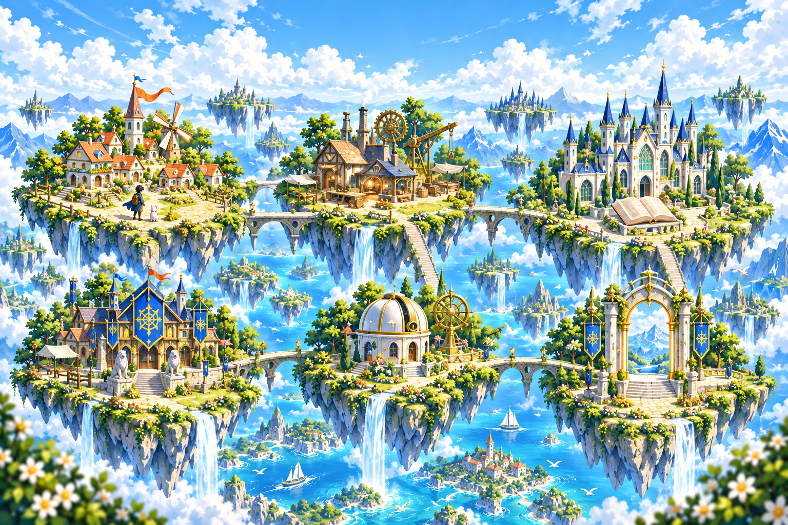

大きなイラスト・多くの演出
本文のイラストと動きを抑え、文字と情報を前面に。
QUEST 02 / AI-ASSISTED PORTFOLIO
冒険するように、自分を知っていただく。生成AIと対話しながら、目的・選択・評価を重ねて制作したポートフォリオです。
自分自身がゲームを好きなことに加え、採用担当者様にも冒険を進めるように、楽しみながら自分について知っていただきたいと考えました。
初めは、ストーリーを進める自己紹介や、技術をLEVEL・経験値で表す案も検討しました。最終的には、楽しみながら情報を読んでいただけることを軸に、少ない操作で全体を把握できる構成にしました。
トップはタイトルと冒険マップを兼ね、基本情報はスクロールで読める1ページに。制作物の詳しい記録だけを別ページにしています。
目的設定・選択・評価・最終判断は自分で行い、AIには選択肢やアイデア、実装の支援を求めました。
短いサイクルで作り、画面を確認し、改善を伝え直すことを繰り返しています。
イラストや演出を増やす案もありましたが、情報よりも装飾が目立つと読みづらくなると考えました。RPGらしさを残しながら、次のように整理しました。
本文のイラストと動きを抑え、文字と情報を前面に。
実際の学習・使用経験と、次の挑戦をチェックポイントで示す。
タイトルと地図を統合し、制作物詳細以外は1ページに。
冒険マップ、クエストの記録、将来の目的地として情報を整理。
昼の景色にし、文字の大きさと色を自分で確認して修正。
ロゴ・雲・水・初回スクロールの演出には停止機能を設け、読むペースを妨げないようにしました。
「RPGっぽく」「独創的に」という抽象的な指示だけでは、想像と出力にずれが生まれました。目的を共有し、案を比べ、条件を具体的にする進め方へ改善しました。
TALK
まだ整理できていない「モヤモヤ」も含めて伝える。
ALIGN
誰に、何を、どんな体験で伝えるのかを壁打ちする。
EXPLORE
具体案がなければ、複数の案を提案してもらう。
DECIDE
目的とイメージに合う案を比較し、選択する。
SPECIFY
変える点・残す点・変更の程度・優先順位を伝える。
BUILD
認識を合わせたうえで、Codexを活用して形にする。
REVIEW
実際の画面で、目的・読みやすさ・内容を評価する。
ITERATE
結果から修正点を見つけ、再び伝えて調整する。

背景はこのサイト用のAI生成イラストです。見出しやリンクは画像へ埋め込まず、Webページの文字として配置しています。
一度にすべてを指示するよりも、少しずつ作ってもらい、その都度イメージをすり合わせることが大切だと感じました。画像や写真を添えると、目指す見た目をより正確に共有できました。
文字の大きさやサイトの色は自分で確認し、見やすくするための修正案を出しました。AIに具体的な条件を伝え、結果を自分で評価することを、今後も制作の中で深めていきたいです。
初期制作・公開を終えた今も、自分でサイトを見直しています。「より短時間で理解していただけるか」「冒険するように楽しく読めるか」という2つの視点から考えた、次の改善案です。
今後の改善案・未実装RPG EXPERIENCE × READABILITY
スクロールを冒険の進行に、セクションをチェックポイントに。装飾や追加のクリックを増やすことより、情報を探しやすく、RPGを知らない方にも意味が伝わる設計を大切にします。
公開 → 自分でレビュー → 課題を見つける → 改善案を考える → 改善・再公開へ
これは、AIとの制作フローにあるREVIEW → ITERATEの具体例です。目的に合うかを自分で評価し、次の改善へつなげていきます。